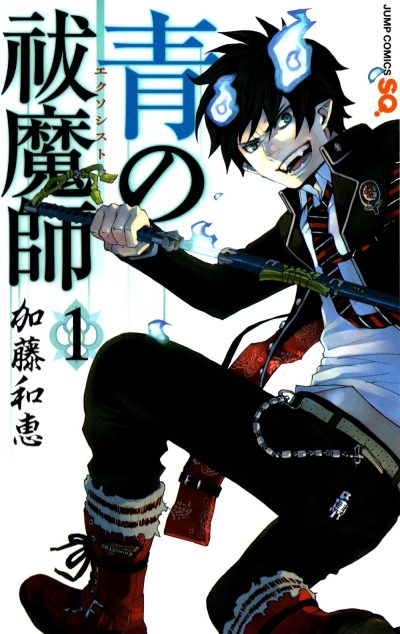

Anime
Anime
MangaBlue Exorcist
Arcs
Episodes numbered continuously across all seasons: Season 1 is 1-25, Kyoto Saga 26-37, Shimane Illuminati Saga 38-49, Beyond the Snow Saga 50-61, The Blue Night Saga 62-73.
Exorcist Cram School
Rin Okumura learns he is the son of Satan and enrolls in True Cross Academy's cram school to become an exorcist alongside his twin brother Yukio.
Anime-original ending
The first season departs from the manga with its own story about Rin's place among exorcists and a direct threat from Satan.
Kyoto Impure King
After his powers are exposed, Rin must win back his classmates' trust while the stolen eye of the Impure King draws the group to Kyoto.
Academy Seven Wonders and Shimane Illuminati
Back at the academy a festival is underway, but the secret society Illuminati makes its move and Izumo is taken to Shimane.
Beyond the Snow
Yukio grows increasingly secretive about his own body and their father's past, and the bond between the twins begins to fracture.
The Blue Night
Rin searches for the truth about the Blue Night and his birth by delving into the memories of the past.